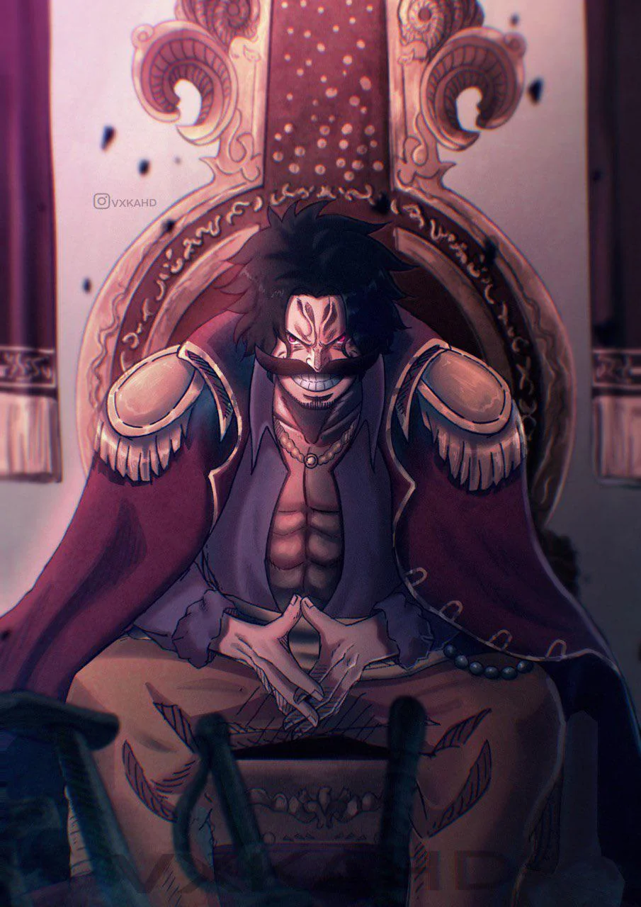
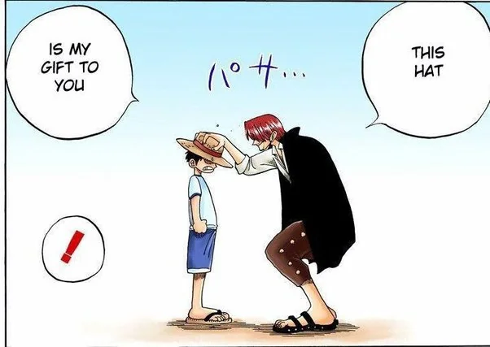
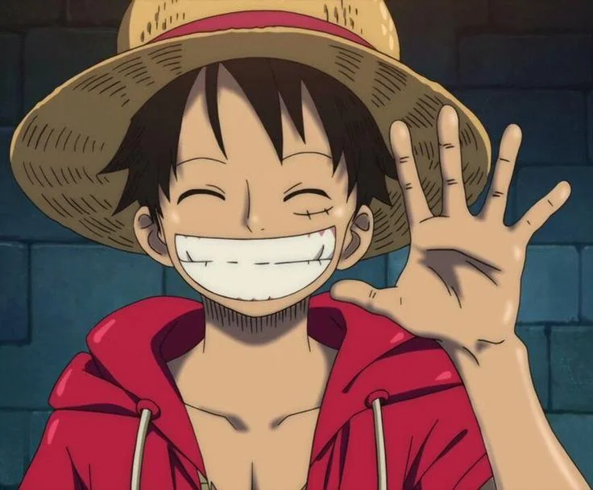
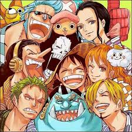

Antes de sua execução, Gol D. Roger revelou ao mundo a existência do lendário tesouro One Piece, iniciando uma nova era de aventuras pelos mares.

Ainda criança, Luffy conheceu Shanks e recebeu seu famoso chapéu de palha após demonstrar sua determinação.

Luffy parte sozinho em busca de uma tripulação para conquistar a Grand Line e encontrar o One Piece.

Ao longo de sua aventura, Luffy reúne companheiros extraordinários que compartilham grandes sonhos.